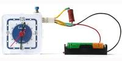

Simple Accumulator Capacity Meter
What is accumulator capacity? How may you measure the capacity?
Capacity is electric charge Q of a new battery or a fully charged accumulator. Electric charge (amount of electricity) is measured in units Coulomb. 1 Coulomb = 1 Ampere × 1 second . Usually capacity is measured in units ampere·hour or ma·hour . Normal capacity of AAA size accumulator is 1000 ma·hour, of AA size is 2000 ma·hour. An accumulator of 1000 ma·hour can deliver 1000ma current during 1 hour or 100ma during 10 hours. Total electric energy stored in accumulator is E = Q × U where U is voltage.
To determine capacity of an accumulator firstly you need to full charge it. Then the accumulator is discharging with some current I . While accumulator is discharging the accumulator voltage is decreasing from initial V0 to voltage of full discharge Vmin. (Less voltage may damage accumulator) This moment the discharge should be terminated. Interval of time T , from start to end of discharge, and current I give us the accumulator capacity Q = I × T . Same way we may measure capacity of an (unchargeable) battery. After full discharge an accumulator it may be charged again, but battery may not be used. Capacity of the battery is capacity of the same new batteries of the same sort. Meanwhile capacity of alcaline battery is about equal to capacity of NiMh accumulator of the same size AA(2000 ma·hour), AAA(1000 ma·hour).
The scheme for measuring of capacity

The proposed scheme discharges an accumulator through a resistor R to a voltage approximately 1 volt that corresponds to "flat" cell. The current of discharge is I = U / R . To measure the discharge time interval T usual electric clock is used, which working voltage is 1.5-2.5V. Solid state relays PVN012 protects the accumulator from full discharge. It disconnects the battery when the voltage drops to Ue = 1V .

Charge an accumulator entirely, connect it to the device, set the clock to 0, and depress Start . The relay PVN012 opens the circuit when the accumulator voltage decreases to 1V. If you need the discharge current to be 1A, merely use the resistor R=1.2 Ohm. Carefully check the contacts. They may steal 0.1V or more, so the accuracy of the measurement decreases.
If you only want to check your cells of AA or AAA size, it's a good idea to place the scheme in a case of a simple accu charger with good copper contacts like it is seen on the photo.
FAQ
I need to measure capacity of an accumulator battery with sum voltage 8.4 V.
ANSWER: Use an adapter like that is shown on the picture. The two resistors should provide needed current. Additional resistor divides voltage to approximately 1V on R at the moment when we must terminate the discharge.Indeed, I need the circuit to test one accumulator?
ANSWER: Charge the accumulator, connect it to a resistor R and a voltmeter, then watch a clock. After some time T the voltage U decreases to "Voltage of almost full discharge" for this type of accumulator. This moment do disconnect the resistor. The capacity is T*U/R .Why two diods?
ANSWER: They and the resistor 5 Ohm prevent too big current through the relay. If you use only 1.2V cells, you may remove the diods from the circuit.Why is the new circuit better than old circuit ?
ANSWER: (a) The clock gets 2.6-2.2V. (b) Both cells switch off automatically. (c) Two diods KC107A or C6041 (1.4V) prevent too big control current.Is there a picture of wire-arrangement?
ANSWER: I use the very this Accumulator capacity meter once a year to check my 30-40 NiMh elements.
{kind=link}
2004